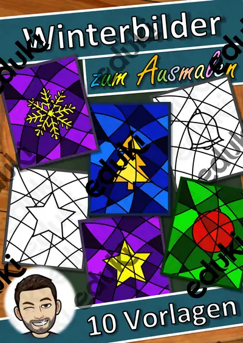

Komplementärkontrast - Kunst Farbkontraste - Farbe - Kontraste
Mit diesem Material für den Kunstunterricht, aus der Reihe zu verschiedenen Farbkontrasten, erhalten Sie das Informationsblatt zum „Komplementärkontrast“ inkl. QR-Code zum passenden Lernvideo. Entdecke mit diesem Material den faszinierenden Komplementärkontrast für deinen Kunstunterricht! Es ist Teil unserer beliebten Reihe zu Farbkontrasten und bietet dir eine umfassende Grundlage für spannende Stunden. Dieses Paket hilft deinen Schüler*innen, den Komplementärkontrast spielerisch zu verstehen und anzuwenden. Du erhältst ein detailliertes Informationsblatt und einen praktischen QR-Code zu einem passenden Lernvideo. Was dich erwartet: Ein Informationsblatt zum Komplementärkontrast: Hier findest du eine klare Erklärung, wie dieser Farbkontrast entsteht und welche Farben sich ergänzen.
Anschauliche Beispiele: Wir zeigen dir die wichtigsten Komplementärfarben wie Gelb/Violett, Blau/Orange und Rot/Grün.
Wirkung und Anwendung: Erfahre, wie Komplementärfarben die Leuchtkraft steigern oder sich zu einem gebrochenen Grau mischen.
Visuelle Unterstützung: Ein Farbkreis hilft deinen Schüler*innen, die Beziehungen der Farben schnell zu erfassen.
Inspiration aus der Kunst: Entdecke Beispiele berühmter Kunstwerke, die den Komplementärkontrast nutzen.
Ein QR-Code zum Lernvideo: Deine Schüler*innen scannen den Code und erhalten direkten Zugang zu einem erklärenden Video. Das ist super für verschiedene Lerntypen und macht das Thema lebendig! Deine Schüler*innen lernen: den Komplementärkontrast klar zu definieren und zu erkennen.
Komplementärfarben im Farbkreis sicher zu identifizieren.die Wirkung von Komplementärfarben in Kunstwerken zu analysieren.
Komplementärfarben bewusst in ihren eigenen kreativen Arbeiten einzusetzen.ihr Wissen über Farbkontraste insgesamt zu vertiefen.
Ähnliche Materialien

Steckbrief Regierungsbezirk Unterfranken inkl. Informationsblatt

Steckbrief Regierungsbezirk Schwaben inkl. Informationsblatt

Steckbrief Regierungsbezirk Oberpfalz inkl. Informationsblatt

Steckbrief Regierungsbezirk Oberfranken inkl. Informationsblatt

Steckbrief Regierungsbezirk Oberbayern inkl. Informationsblatt

Steckbrief Regierungsbezirk Niederbayern inkl. Informationsblatt

Abstrakte Winterbilder - Winter-Bilder zum Ausmalen - Winterkunst - Klassenzimmerdekoration - Fensterbilder - Ausmalbilder